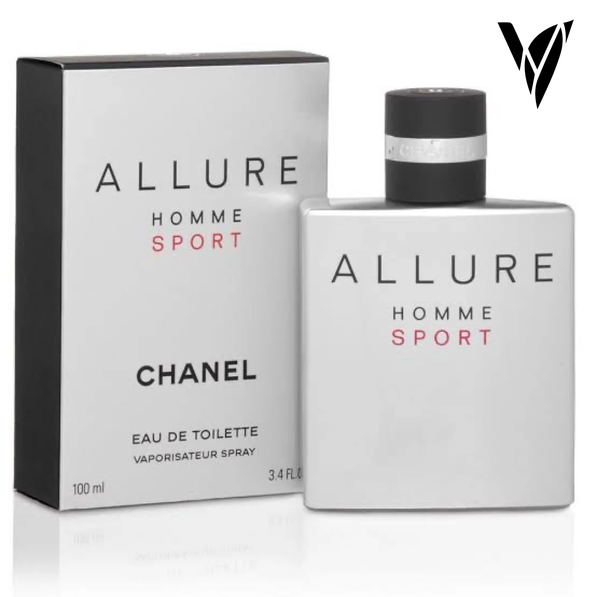
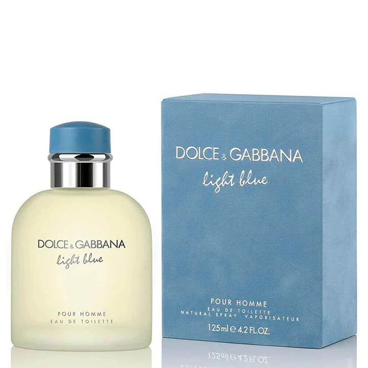
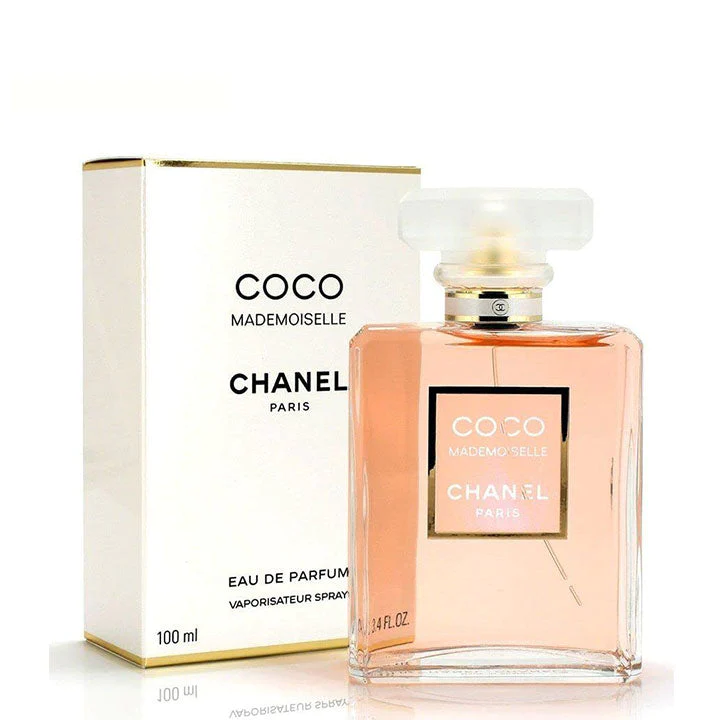
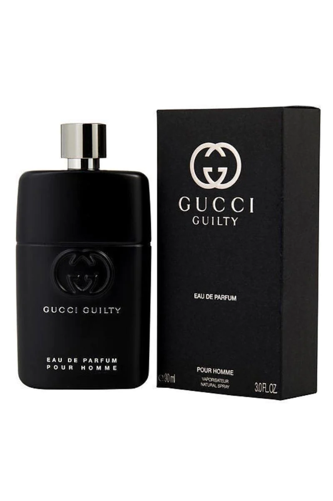
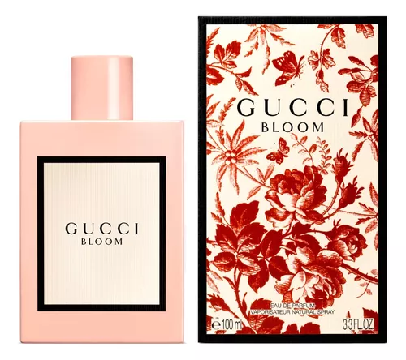
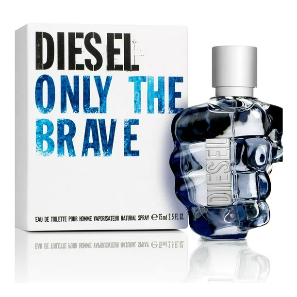
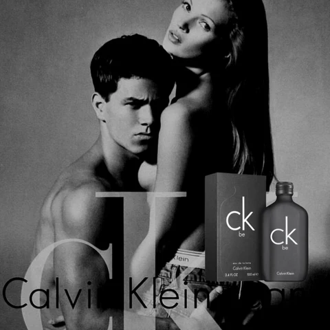

allure homme sport chanel

Características. Familia olfativa: Floral Oriental. Notas de salida: limón, bergamota,
mandarina, durazno (melocotón) y maracuyá. Notas de corazón: jazmín, nenúfar,
madreselva, fresia, magnolia, rosa de mayo, peonía y flor de azahar del naranjo.
THE SCENT EAU DE PARFUM

Boss The Scent de Hugo Boss es una fragancia de la familia olfativa Floral Frutal para
Mujeres. Boss The Scent se lanzó en 2016. Las Notas de Salida son durazno
(melocotón) y fresia; la Nota de Corazón es osmanto (olivo oloroso); la Nota de Fondo es cacao.
THE ONE GOLD EDP INTENSE

La fragancia comienza con vibrantes notas frutales
a brillante mandarina italiana que se mezcla con
ciruela jugosa y el sutil picante de la pimienta rosa.
Perfume Light Blue de Dolce & Gabbana

Describir el aroma de Dolce Gabbana Light Blue puede ser tan
sencillo como decir que huele a un verano en las playas del
Mediterráneo. Las notas de salida son limón siciliano, manzana,
cedro y campanilla; con notas de corazón de bambú, jazmín y rosa
blanca y finalmente con notas de fondo de cedro, almizcle y ámbar
PERFUME COCO MADEMOISELLE CHANEL

Esta fragancia tiene notas superiores de naranja, bergamota y pomelo
Sus notas medias cuentan con jazmín, rosa y litchi.
Perfume Hombre Gucci Guilty EDP For Him

- Notas de salida de pimienta rosa, un aroma intenso y
picante combinado con revitalizante limón italiano. - Notas de
corazón de esencia absoluta de azahar combinadas con nerolí y
lavanda francesa. - Notas de fondo de pachulí, que materializan la
expresión moderna de la sensualidad, el misterio y la intriga.
Gucci Bloom Eau de Parfum

Huele maravillosamente bien a flores blancas, destaca el jazmín. El olor se va suavizando, al
principio es muy fuerte pero luego queda fantástico. Dulce y nada empalagoso.
Perfume Locion Diesel Only The Brave

Es una fragancia masculina que combina notas de ámbar, cítricas,
cuero, atalcadas, amaderadas, animálicas, de violeta y aromáticas.
Su aroma es audaz, seductor y carismático, perfecto para hombres
que desean destacar y dejar una impresión duradera con una fragancia única y distintiva.
Perfume Unisex Calvin Klein Ck Be

Familia olfativa: Floral Amaderada. Notas de salida: lavanda, notas verdes, menta,
mandarina, enebro de Virginia y bergamota. Notas de corazón: hierba verde, magnolia,
orquídea, fresia, durazno (melocotón) y jazmín. Notas de fondo: sándalo, ámbar,
opopónaco, almizcle, cedro y vainilla.
+